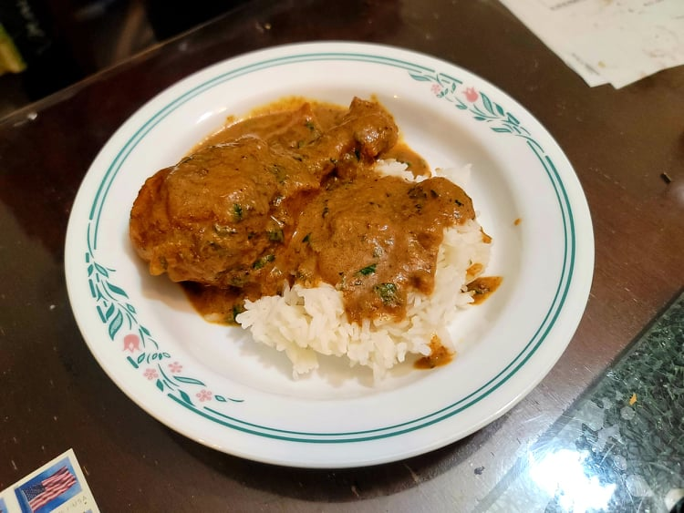

Chicken Korma

Ingredients:
Marinade:
- 2 - 2 1/2 lb Chicken, bone-in
- 6 tbsp Yogurt
- 2 tbsp Ginger garlic paste
- 2 tsp Garam Masala
- 2 tsp Kashmiri chili powder
- 1/2 tsp Turmeric
- 1 tsp Salt
Sauce:
- 3 tbsp Ghee
- 4 Cardamoms
- 2 cups Onions, sliced, about 4 medium onions
- 12 Cashews
- 8 Almonds
- 1/2 cup Yogurt
Chicken Korma:
- 2 tbsp Oil
- 2 small Bay leaves
- 8 Cloves
- 2 2" inch Cinnamon sticks
- 2 Cardamom
- Optional: 2 - 4 Green chilies, slit
- 1 cup Water, or more as needed
- 3 tsp Coriander
- 1 1/2 tsp Garam masala
- 1/2 tsp Salt
- 1/2 tsp Kashmiri chili powder
- 6 tbsp Fresh cilantro, chopped
Instructions:
- Combine all the marinade ingredients together and massage them into the chicken. Let marinate overnight.
- For the sauce, melt the ghee in a large pan over medium-low heat. Add the cardamom and let heat cook for 30-60 seconds or until fragrant.
- Add in onions and then raise the heat to medium. Sauté the onions until uniformly golden brown, about 6-10 minutes.
- Then add in the almonds and cashews. Sauté for another minute and then remove from heat. Once cooled transfer to a blender with the yogurt and blend until smooth.
- To the same pan, heat the oil over medium heat. Add in the cinnamon, cloves, bay leaves, and cardamom and sauté until fragrant, about a minute.
- Then add in the chicken and chilies. Sauté until browned, about 5-6 minutes. Then add in the sauce, water, and the spices. (Adding the water to the blender and mixing will help to get it out of the blender more easily.) Cover and let cook over low heat until tender, about 30 - 40 minutes.
- If the sauce is too thin, continue to cook until it reaches the desired consistency. If it is too thick, add water as needed.
- Remove from heat and mix in the cilantro. Serve immediately over rice or with bread.